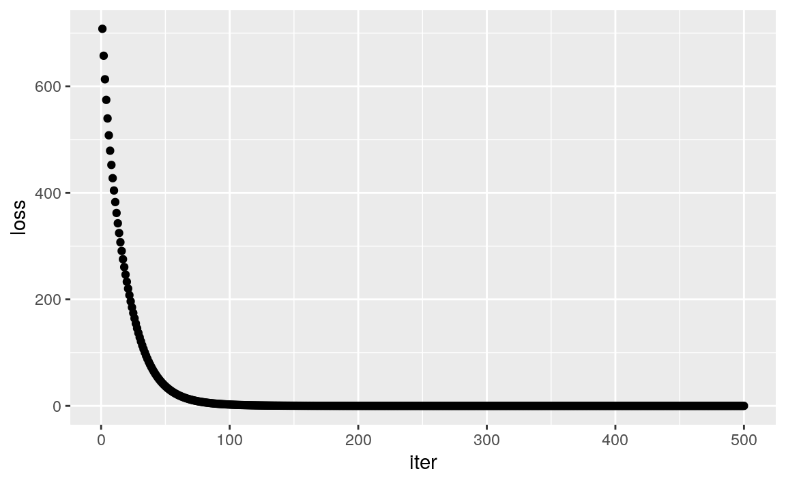

Chapter 13 A step-by-step neural network in rTorch
13.1 Introduction
Source: https://github.com/jcjohnson/pytorch-examples#pytorch-nn
In this example we use the torch nn package to implement our two-layer network:
13.2 Select device
library(rTorch)
device = torch$device('cpu')
# device = torch.device('cuda') # Uncomment this to run on GPUNis batch size;D_inis input dimension;His hidden dimension;D_outis output dimension.
13.3 Create the dataset
invisible(torch$manual_seed(0)) # do not show the generator output
N <- 64L; D_in <- 1000L; H <- 100L; D_out <- 10L
# Create random Tensors to hold inputs and outputs
x = torch$randn(N, D_in, device=device)
y = torch$randn(N, D_out, device=device)13.4 Define the model
We use the nn package to define our model as a sequence of layers. nn.Sequential applies these leayers in sequence to produce an output. Each Linear Module computes the output by using a linear function, and holds also tensors for its weights and biases. After constructing the model we use the .to() method to move it to the desired device, which could be CPU or GPU. Remember that we selected CPU with torch$device('cpu').
model <- torch$nn$Sequential(
torch$nn$Linear(D_in, H), # first layer
torch$nn$ReLU(),
torch$nn$Linear(H, D_out))$to(device) # output layer
print(model)#> Sequential(
#> (0): Linear(in_features=1000, out_features=100, bias=True)
#> (1): ReLU()
#> (2): Linear(in_features=100, out_features=10, bias=True)
#> )13.5 The Loss function
The nn package also contains definitions of several loss functions; in this case we will use Mean Squared Error (\(MSE\)) as our loss function. Setting reduction='sum' means that we are computing the sum of squared errors rather than the mean; this is for consistency with the examples above where we manually compute the loss, but in practice it is more common to use the mean squared error as a loss by setting reduction='elementwise_mean'.
loss_fn = torch$nn$MSELoss(reduction = 'sum')13.6 Iterate through the dataset
learning_rate = 1e-4
for (t in 1:500) {
# Forward pass: compute predicted y by passing x to the model. Module objects
# override the __call__ operator so you can call them like functions. When
# doing so you pass a Tensor of input data to the Module and it produces
# a Tensor of output data.
y_pred = model(x)
# Compute and print loss. We pass Tensors containing the predicted and true
# values of y, and the loss function returns a Tensor containing the loss.
loss = loss_fn(y_pred, y)
cat(t, "\t")
cat(loss$item(), "\n")
# Zero the gradients before running the backward pass.
model$zero_grad()
# Backward pass: compute gradient of the loss with respect to all the learnable
# parameters of the model. Internally, the parameters of each Module are stored
# in Tensors with requires_grad=True, so this call will compute gradients for
# all learnable parameters in the model.
loss$backward()
# Update the weights using gradient descent. Each parameter is a Tensor, so
# we can access its data and gradients like we did before.
with(torch$no_grad(), {
for (param in iterate(model$parameters())) {
# in Python this code is much simpler. In R we have to do some conversions
# param$data <- torch$sub(param$data,
# torch$mul(param$grad$float(),
# torch$scalar_tensor(learning_rate)))
param$data <- param$data - param$grad * learning_rate
}
})
} #> 1 708
#> 2 658
#> 3 613
#> 4 575
#> 5 540
#> 6 508
#> 7 479
#> 8 452
#> 9 428
#> 10 404
#> 11 383
#> 12 362
#> 13 343
#> 14 325
#> 15 307
#> 16 291
#> 17 275
#> 18 261
#> 19 247
#> 20 233
#> 21 220
#> 22 208
#> 23 196
#> 24 185
#> 25 174
#> 26 164
#> 27 155
#> 28 146
#> 29 137
#> 30 129
#> 31 121
#> 32 114
#> 33 107
#> 34 100
#> 35 94.1
#> 36 88.4
#> 37 83
#> 38 77.9
#> 39 73.2
#> 40 68.7
#> 41 64.5
#> 42 60.6
#> 43 57
#> 44 53.5
#> 45 50.3
#> 46 47.3
#> 47 44.5
#> 48 41.8
#> 49 39.3
#> 50 37
#> 51 34.8
#> 52 32.8
#> 53 30.8
#> 54 29
#> 55 27.4
#> 56 25.8
#> 57 24.3
#> 58 22.9
#> 59 21.6
#> 60 20.4
#> 61 19.2
#> 62 18.1
#> 63 17.1
#> 64 16.2
#> 65 15.3
#> 66 14.4
#> 67 13.6
#> 68 12.9
#> 69 12.2
#> 70 11.5
#> 71 10.9
#> 72 10.3
#> 73 9.79
#> 74 9.27
#> 75 8.79
#> 76 8.32
#> 77 7.89
#> 78 7.48
#> 79 7.09
#> 80 6.73
#> 81 6.39
#> 82 6.06
#> 83 5.75
#> 84 5.47
#> 85 5.19
#> 86 4.93
#> 87 4.69
#> 88 4.46
#> 89 4.24
#> 90 4.03
#> 91 3.83
#> 92 3.65
#> 93 3.47
#> 94 3.3
#> 95 3.14
#> 96 2.99
#> 97 2.85
#> 98 2.72
#> 99 2.59
#> 100 2.47
#> 101 2.35
#> 102 2.24
#> 103 2.14
#> 104 2.04
#> 105 1.95
#> 106 1.86
#> 107 1.77
#> 108 1.69
#> 109 1.62
#> 110 1.54
#> 111 1.48
#> 112 1.41
#> 113 1.35
#> 114 1.29
#> 115 1.23
#> 116 1.18
#> 117 1.12
#> 118 1.08
#> 119 1.03
#> 120 0.985
#> 121 0.942
#> 122 0.902
#> 123 0.863
#> 124 0.826
#> 125 0.791
#> 126 0.758
#> 127 0.726
#> 128 0.695
#> 129 0.666
#> 130 0.638
#> 131 0.612
#> 132 0.586
#> 133 0.562
#> 134 0.539
#> 135 0.517
#> 136 0.496
#> 137 0.476
#> 138 0.457
#> 139 0.438
#> 140 0.421
#> 141 0.404
#> 142 0.388
#> 143 0.373
#> 144 0.358
#> 145 0.344
#> 146 0.33
#> 147 0.318
#> 148 0.305
#> 149 0.293
#> 150 0.282
#> 151 0.271
#> 152 0.261
#> 153 0.251
#> 154 0.241
#> 155 0.232
#> 156 0.223
#> 157 0.215
#> 158 0.207
#> 159 0.199
#> 160 0.192
#> 161 0.185
#> 162 0.178
#> 163 0.171
#> 164 0.165
#> 165 0.159
#> 166 0.153
#> 167 0.147
#> 168 0.142
#> 169 0.137
#> 170 0.132
#> 171 0.127
#> 172 0.123
#> 173 0.118
#> 174 0.114
#> 175 0.11
#> 176 0.106
#> 177 0.102
#> 178 0.0987
#> 179 0.0952
#> 180 0.0918
#> 181 0.0886
#> 182 0.0855
#> 183 0.0825
#> 184 0.0797
#> 185 0.0769
#> 186 0.0742
#> 187 0.0717
#> 188 0.0692
#> 189 0.0668
#> 190 0.0645
#> 191 0.0623
#> 192 0.0602
#> 193 0.0582
#> 194 0.0562
#> 195 0.0543
#> 196 0.0525
#> 197 0.0507
#> 198 0.049
#> 199 0.0473
#> 200 0.0458
#> 201 0.0442
#> 202 0.0428
#> 203 0.0413
#> 204 0.04
#> 205 0.0386
#> 206 0.0374
#> 207 0.0361
#> 208 0.0349
#> 209 0.0338
#> 210 0.0327
#> 211 0.0316
#> 212 0.0306
#> 213 0.0296
#> 214 0.0286
#> 215 0.0277
#> 216 0.0268
#> 217 0.0259
#> 218 0.0251
#> 219 0.0243
#> 220 0.0235
#> 221 0.0228
#> 222 0.022
#> 223 0.0213
#> 224 0.0206
#> 225 0.02
#> 226 0.0193
#> 227 0.0187
#> 228 0.0181
#> 229 0.0176
#> 230 0.017
#> 231 0.0165
#> 232 0.016
#> 233 0.0155
#> 234 0.015
#> 235 0.0145
#> 236 0.014
#> 237 0.0136
#> 238 0.0132
#> 239 0.0128
#> 240 0.0124
#> 241 0.012
#> 242 0.0116
#> 243 0.0113
#> 244 0.0109
#> 245 0.0106
#> 246 0.0102
#> 247 0.00993
#> 248 0.00963
#> 249 0.00933
#> 250 0.00905
#> 251 0.00877
#> 252 0.0085
#> 253 0.00824
#> 254 0.00799
#> 255 0.00775
#> 256 0.00751
#> 257 0.00728
#> 258 0.00706
#> 259 0.00685
#> 260 0.00664
#> 261 0.00644
#> 262 0.00625
#> 263 0.00606
#> 264 0.00588
#> 265 0.0057
#> 266 0.00553
#> 267 0.00536
#> 268 0.0052
#> 269 0.00505
#> 270 0.00489
#> 271 0.00475
#> 272 0.00461
#> 273 0.00447
#> 274 0.00434
#> 275 0.00421
#> 276 0.00408
#> 277 0.00396
#> 278 0.00384
#> 279 0.00373
#> 280 0.00362
#> 281 0.00351
#> 282 0.00341
#> 283 0.00331
#> 284 0.00321
#> 285 0.00311
#> 286 0.00302
#> 287 0.00293
#> 288 0.00285
#> 289 0.00276
#> 290 0.00268
#> 291 0.0026
#> 292 0.00253
#> 293 0.00245
#> 294 0.00238
#> 295 0.00231
#> 296 0.00224
#> 297 0.00218
#> 298 0.00212
#> 299 0.00205
#> 300 0.00199
#> 301 0.00194
#> 302 0.00188
#> 303 0.00183
#> 304 0.00177
#> 305 0.00172
#> 306 0.00167
#> 307 0.00162
#> 308 0.00158
#> 309 0.00153
#> 310 0.00149
#> 311 0.00145
#> 312 0.0014
#> 313 0.00136
#> 314 0.00132
#> 315 0.00129
#> 316 0.00125
#> 317 0.00121
#> 318 0.00118
#> 319 0.00115
#> 320 0.00111
#> 321 0.00108
#> 322 0.00105
#> 323 0.00102
#> 324 0.000992
#> 325 0.000964
#> 326 0.000936
#> 327 0.00091
#> 328 0.000884
#> 329 0.000859
#> 330 0.000834
#> 331 0.000811
#> 332 0.000788
#> 333 0.000766
#> 334 0.000744
#> 335 0.000723
#> 336 0.000702
#> 337 0.000683
#> 338 0.000663
#> 339 0.000645
#> 340 0.000626
#> 341 0.000609
#> 342 0.000592
#> 343 0.000575
#> 344 0.000559
#> 345 0.000543
#> 346 0.000528
#> 347 0.000513
#> 348 0.000499
#> 349 0.000485
#> 350 0.000471
#> 351 0.000458
#> 352 0.000445
#> 353 0.000433
#> 354 0.000421
#> 355 0.000409
#> 356 0.000397
#> 357 0.000386
#> 358 0.000375
#> 359 0.000365
#> 360 0.000355
#> 361 0.000345
#> 362 0.000335
#> 363 0.000326
#> 364 0.000317
#> 365 0.000308
#> 366 0.000299
#> 367 0.000291
#> 368 0.000283
#> 369 0.000275
#> 370 0.000268
#> 371 0.00026
#> 372 0.000253
#> 373 0.000246
#> 374 0.000239
#> 375 0.000232
#> 376 0.000226
#> 377 0.00022
#> 378 0.000214
#> 379 0.000208
#> 380 0.000202
#> 381 0.000196
#> 382 0.000191
#> 383 0.000186
#> 384 0.000181
#> 385 0.000176
#> 386 0.000171
#> 387 0.000166
#> 388 0.000161
#> 389 0.000157
#> 390 0.000153
#> 391 0.000148
#> 392 0.000144
#> 393 0.00014
#> 394 0.000136
#> 395 0.000133
#> 396 0.000129
#> 397 0.000125
#> 398 0.000122
#> 399 0.000119
#> 400 0.000115
#> 401 0.000112
#> 402 0.000109
#> 403 0.000106
#> 404 0.000103
#> 405 1e-04
#> 406 9.77e-05
#> 407 9.5e-05
#> 408 9.24e-05
#> 409 8.98e-05
#> 410 8.74e-05
#> 411 8.5e-05
#> 412 8.26e-05
#> 413 8.04e-05
#> 414 7.82e-05
#> 415 7.6e-05
#> 416 7.4e-05
#> 417 7.19e-05
#> 418 7e-05
#> 419 6.81e-05
#> 420 6.62e-05
#> 421 6.44e-05
#> 422 6.26e-05
#> 423 6.09e-05
#> 424 5.92e-05
#> 425 5.76e-05
#> 426 5.61e-05
#> 427 5.45e-05
#> 428 5.3e-05
#> 429 5.16e-05
#> 430 5.02e-05
#> 431 4.88e-05
#> 432 4.75e-05
#> 433 4.62e-05
#> 434 4.49e-05
#> 435 4.37e-05
#> 436 4.25e-05
#> 437 4.14e-05
#> 438 4.02e-05
#> 439 3.91e-05
#> 440 3.81e-05
#> 441 3.7e-05
#> 442 3.6e-05
#> 443 3.5e-05
#> 444 3.41e-05
#> 445 3.32e-05
#> 446 3.23e-05
#> 447 3.14e-05
#> 448 3.05e-05
#> 449 2.97e-05
#> 450 2.89e-05
#> 451 2.81e-05
#> 452 2.73e-05
#> 453 2.66e-05
#> 454 2.59e-05
#> 455 2.52e-05
#> 456 2.45e-05
#> 457 2.38e-05
#> 458 2.32e-05
#> 459 2.26e-05
#> 460 2.19e-05
#> 461 2.14e-05
#> 462 2.08e-05
#> 463 2.02e-05
#> 464 1.97e-05
#> 465 1.91e-05
#> 466 1.86e-05
#> 467 1.81e-05
#> 468 1.76e-05
#> 469 1.71e-05
#> 470 1.67e-05
#> 471 1.62e-05
#> 472 1.58e-05
#> 473 1.54e-05
#> 474 1.49e-05
#> 475 1.45e-05
#> 476 1.41e-05
#> 477 1.38e-05
#> 478 1.34e-05
#> 479 1.3e-05
#> 480 1.27e-05
#> 481 1.23e-05
#> 482 1.2e-05
#> 483 1.17e-05
#> 484 1.14e-05
#> 485 1.11e-05
#> 486 1.08e-05
#> 487 1.05e-05
#> 488 1.02e-05
#> 489 9.92e-06
#> 490 9.65e-06
#> 491 9.39e-06
#> 492 9.14e-06
#> 493 8.89e-06
#> 494 8.65e-06
#> 495 8.42e-06
#> 496 8.19e-06
#> 497 7.97e-06
#> 498 7.75e-06
#> 499 7.55e-06
#> 500 7.34e-0613.7 Using R generics to simplify tensor operations
The following two expressions are equivalent, with the first being the long version natural way of doing it in PyTorch. The second is using the generics in R for subtraction, multiplication and scalar conversion.
param$data <- torch$sub(param$data,
torch$mul(param$grad$float(),
torch$scalar_tensor(learning_rate)))param$data <- param$data - param$grad * learning_rate13.8 A more elegant way of writing the neural network
invisible(torch$manual_seed(0)) # do not show the generator output
# layer properties
N <- 64L; D_in <- 1000L; H <- 100L; D_out <- 10L
# Create random Tensors to hold inputs and outputs
x = torch$randn(N, D_in, device=device)
y = torch$randn(N, D_out, device=device)
# set up the neural network
model <- torch$nn$Sequential(
torch$nn$Linear(D_in, H), # first layer
torch$nn$ReLU(), # activation
torch$nn$Linear(H, D_out))$to(device) # output layer
# specify how we will be computing the loss
loss_fn = torch$nn$MSELoss(reduction = 'sum')
learning_rate = 1e-4
loss_row <- list(vector()) # collect a list for the final dataframe
for (t in 1:500) {
# Forward pass: compute predicted y by passing x to the model. Module objects
# override the __call__ operator so you can call them like functions. When
# doing so you pass a Tensor of input data to the Module and it produces
# a Tensor of output data.
y_pred = model(x)
# Compute and print loss. We pass Tensors containing the predicted and true
# values of y, and the loss function returns a Tensor containing the loss.
loss = loss_fn(y_pred, y) # (y_pred - y) is a tensor; loss_fn output is a scalar
loss_row[[t]] <- c(t, loss$item())
# Zero the gradients before running the backward pass.
model$zero_grad()
# Backward pass: compute gradient of the loss with respect to all the learnable
# parameters of the model. Internally, the parameters of each module are stored
# in tensors with `requires_grad=True`, so this call will compute gradients for
# all learnable parameters in the model.
loss$backward()
# Update the weights using gradient descent. Each parameter is a tensor, so
# we can access its data and gradients like we did before.
with(torch$no_grad(), {
for (param in iterate(model$parameters())) {
# using R generics
param$data <- param$data - param$grad * learning_rate
}
})
} 13.9 Create a browseable dataframe
library(DT)
loss_df <- data.frame(Reduce(rbind, loss_row), row.names = NULL)
names(loss_df)[1] <- "iter"
names(loss_df)[2] <- "loss"
DT::datatable(loss_df)13.10 Plot the loss at each iteration
library(ggplot2)
# plot
ggplot(loss_df, aes(x = iter, y = loss)) +
geom_point()